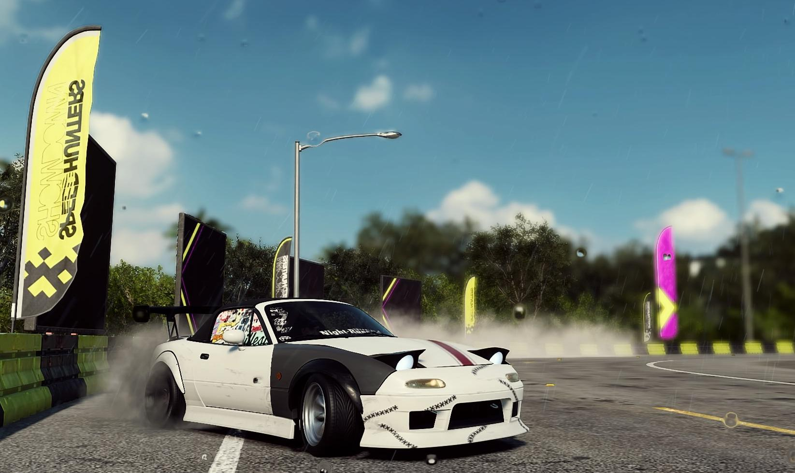

JD what??
JMD stands for Japanese Domestic Market. It's basically cars and parts that are designed and manufactured in
Japan.
People like this because Japan is known for building high quality cars and parts. This lead to high demand
for those cars and parts. Because of this demand,
a lot of aftermarket parts are being produced. Which makes it really easy and if you're lucky even cheap to
modify JDM cars.

So who makes these cars?
Just to give you an idea what we're talking about I'll name some well known JDM brands for you:
- Toyota
- Mazda
- Nissan
- Honda
So you might be wondering: Do people even like those cars, weren't those cars quite slow and uncomfortable?
To answer your question: Yes. While stock those cars might not be the fastest, newest or best
looking.
But remember the black car on the overview page? That was ones a old,
crusty Mazda. AND LOOK AT HER NOW!
Just for a comparison, look at this:
Lets compare that to a tuned Miata:
Looks good doesn't it? Thats the beauty about JDM cars. you can swap everything you can dream of, and even more than that! Want new wheels? No problem. Want a new hood? Ofcourse! Swap the entire engine? Why Not!
Popularity
Back in the days JDM cars were quite rare and underground, you couldn't find them on the streets or on internet (also because there was no internet.) But recently JDM cars sky rocketed in popularity! With the comming of internet and social media people can't help but show of the beauty of their cars. Which is completely understandable, but this makes the community bigger and bigger. That's awsome because we get to see more and more cars modded from head to toe. On the other side because of this increase of populairity the prices have gone mad.
But... how?
You would say that you would just get supply and demand as usual: if more people want the cars and parts
more people will produce the cars.
Well.. no. The cars that are most loved in JDM culture are quite old and aren't produced anymore.
These old cars have also been used for drifting in case you didn't know, drifting destroys your car with
every little mistake you make. So the problem is that there are old cars being destroyd and bought up.
All while demand is rising.
Engines
One last reason JDM cars are so loved is the engine. Some cars have a powerfull engine from the factory,
others will barely beat a Renault Twingo.
But here comes the magic... You can swap them! Take a old beat up Honda civic and slap a big engine
in it and boom the car now competes with the most
premium cars in the world.
For example lets take a Mazda rx7. A mazda rx7 is a beautifull car (also a very populair car) wich produces
about 150 horsepower out of the factory.
Thats not to bad. This horsepower is being produced by a single rotor engine and no turbo. So like any
responsable adult would do,
people have put a 4 rotor rotory engine in the car along with a enormous turbo. This pushes the car al the
way up to 1200 horsepower!
And in terms of the sound? I'll let the video below do the talking.